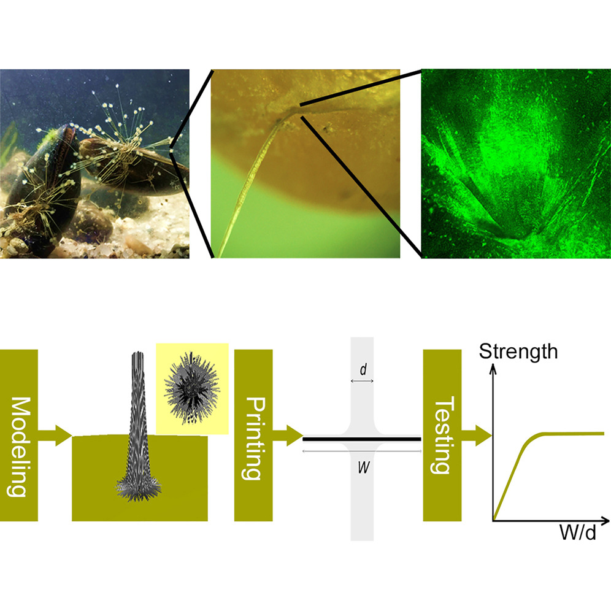
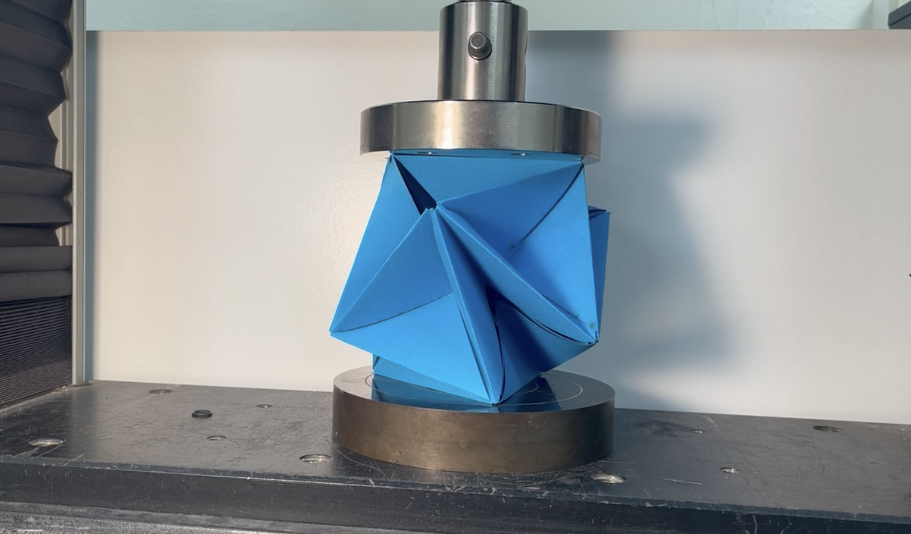
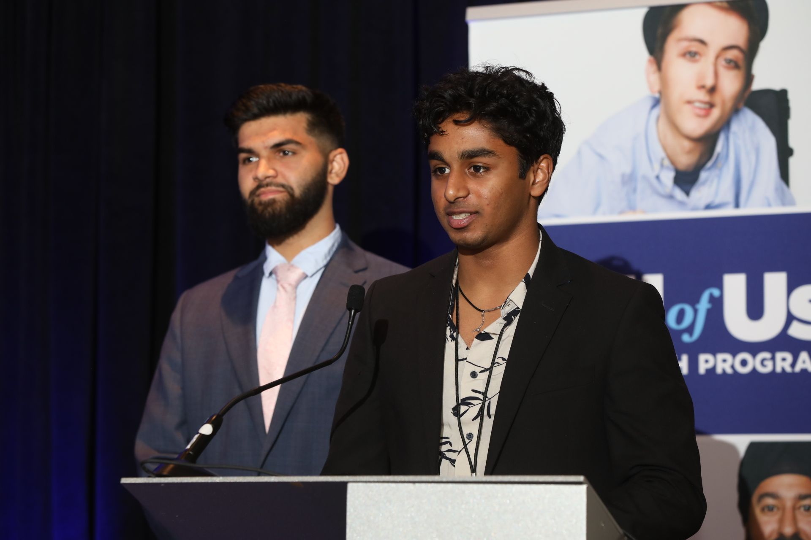
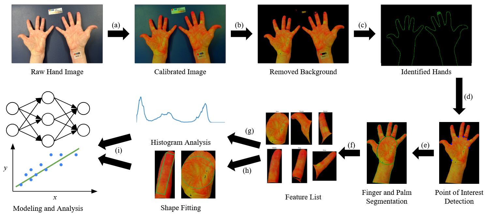

ARCHITECTING THE FUTURE OF INTELLIGENT SYSTEMS.
A repository of deep research across scientific machine learning, structural & biomedical materials, and population health. Spanning Brown University, NVIDIA's Deep Learning Institute, NASA, and the NIH.
01 // APPLIED ML

PHYSICS-INFORMED NEURAL NETWORKS
Developed at Brown in collaboration with NVIDIA's Deep Learning Institute, working with Prof. George Em Karniadakis and Dr. Khemraj Shukla. It is a PINN and Bayesian PINN (BPINN) method for predicting drug-release rates from planar, 1D-wrinkled, and 2D-crumpled controlled-release films, built in PyTorch and JAX. By integrating Fick's diffusion law directly into the network alongside limited experimental data, the model benchmarks against, and outperforms, the classical Fick, Higuchi, and Peppas release models, cutting prediction error by up to 40% and reaching target accuracy for the planar-film case using just 6% of the typical experimental timeframe.
For simple, planar controlled-release materials. The reduction is 67% for more complex, folded geometries. Read the Brown University News feature →
DRUG-RELEASE PREDICTION
Collaborative research with Prof. Vikas Srivastava (Brown Engineering), Prof. George Em Karniadakis, and Dr. Khemraj Shukla. This work could cut development time for therapeutic patches, bandages, and implants. The press coverage above and the peer-reviewed preprint at left describe the same underlying model.
PREDICTING HEALTHCARE PROVIDER ENGAGEMENT IN SMS CAMPAIGNS
Applied predictive modeling to forecast how individual healthcare providers engage with SMS-based outreach campaigns. This is the same predictive-modeling-of-provider-behavior work that underpins product development at Impiricus, formalized and written up as a standalone study.
02 // BROWN UNIVERSITY RESEARCH

WHY MUSSEL BYSSAL PLAQUES ARE TINY YET STRONG
First-author study, conducted during his Brown years through a collaboration with Dr. Zhao Qin's lab at MIT, combining mechanical testing, 3D printing, and numerical modeling to explain how mussels anchor themselves to wave-battered surfaces. Found that byssal plaques 3–5x the diameter of their thread give optimized attachment strength, and that overall bonding strength depends more on network architecture than on plaque size alone.

MEASURING EMBEDDED CRACKS IN HDPE VIA ULTRASOUND
High-density polyethylene is used in nuclear-plant cooling pipelines and biomedical implants. It can develop embedded crack-like flaws during fabrication or operation that risk catastrophic failure if undetected. Working with Prof. Vikas Srivastava's Biomedical Engineering lab, built a finite-element-simulation-trained CNN that predicts crack length and position simultaneously from only tens of microseconds of ultrasound A-scan signal, achieving 3.2% mean absolute percent error on crack length and 3.8% on position.
Beyond the two published studies above, ongoing work in Prof. Vikas Srivastava's lab at Brown applies machine learning to a wider set of structural and biomedical materials problems.
- Analyzing structural defects in polymers with machine learning techniques
- Understanding the mechanics of hydrogels for biomedical applications
- Using machine learning to predict dietary intake and health status
03 // NASA

A NOVEL GEOMETRIC STRUCTURE
Investigated a novel geometric structure I invented to study material behavior under stress for NASA. The approach combines mechanics and statistics to predict how materials behave under stress, applied to NASA space exploration technologies.

STRUCTURAL BEHAVIOR UNDER EXTREME LOADING
As a NASA Space Grant Research Scholar, applied statistical and mechanical modeling to the question of how materials behave under the extreme structural and thermal loads seen in space exploration. This work connects directly to the same physics-informed and data-driven modeling approaches used in the Applied ML and Brown University research above. The research looks at structural materials and how they respond to stress and strain under load, including how and when they start to fail. Understanding these failure modes under extreme conditions helps predict which materials and structures can hold up during space missions.
04 // NIH & POPULATION HEALTH

LARGE-SCALE STATISTICAL & ML ANALYSIS
Research through the NIH All of Us Program applying statistical and machine-learning analysis to large-scale population health datasets, exploring correlations between maternal mortality, cardiovascular disease, and social determinants of health. Presented these findings with Ketan Pamurthy at CPGI 2023.
- Large-scale statistical & ML analysis of NIH All of Us data
- Correlating maternal mortality with social determinants of health
ETHNICITY, SOCIAL DETERMINANTS & CARDIOVASCULAR DISEASE
Research with Prof. Neil Sarkar in Brown University's Department of Biomedical Informatics studying the role of ethnicity and social determinants in cardiovascular disease, including an exploration of "Blue Zones" longevity patterns in the U.S., regions where residents live measurably longer, healthier lives.
- Ethnicity & social determinants in cardiovascular disease
- Exploring "Blue Zones" longevity patterns in the U.S.

ANALYZING HAND IMAGES FOR DIET AND HEALTH
This independent study at Brown looks at whether a photo of someone's hand can say something about their diet and health. The method starts by adjusting the colors in each photo so they match up across different lighting and cameras. It then finds the hand in the photo, separates it from the background, and splits the image into the left and right hand.
From there, it finds key points on the hand and uses them to split each hand into its fingers and palm. For each of these parts, it pulls out features like color patterns and shape measurements, and puts them on a common scale so they can be compared across photos. The next step, proposed but not yet done, is to use these features with statistics and machine learning to try to predict health outcomes.
This work is unpublished. If you are interested in it, feel free to reach out.